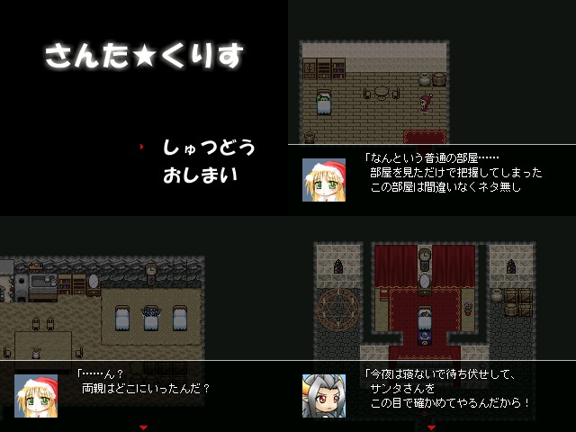

| No,061 【さんた★くりす】 |
| ダウンロード（111KB） |
 |
| 【ＨＮ】 vipXX.ksg 【コメント】 「実在を確認できずとも…プレゼントは配られ続ける…知るがよい『サンタ』の意味を！ それは…太古の昔より…はるかなる未来まで！ 平和なる時も…混乱の世にも！ あらゆる場所！ あらゆる時代に！！ 聖夜のメインとなるものッ！！ それは人間が存在する限り永遠に続く『存在』なのだ… その存在の名を…『サンタ』 あるいは…『おとうさん』というッ！」 |
| 【管理人コメント】 サンタ＝親 あれ・・・また誰か来たみたいだな |